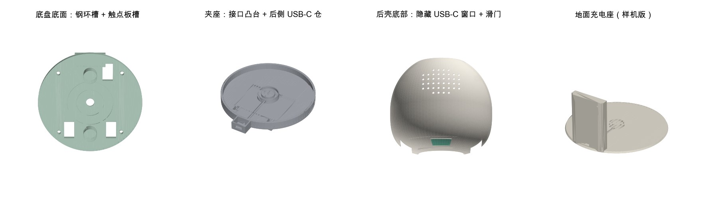
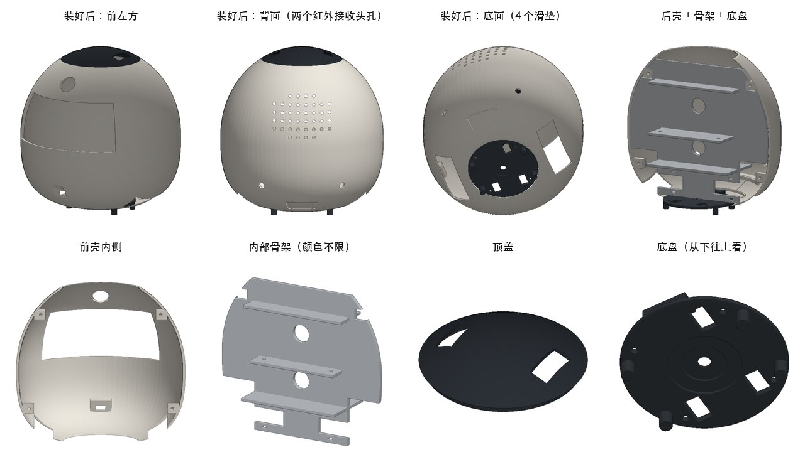

02 尺寸图
外壳和内部布局
单位毫米。数字和 3D 模型用的是同一组。第一次做建议整体放大到 115%，现成模块之间要走线，1:1 会很挤。
- 驱动轮 Ø44，轴心离地 22
- N20 减速电机，轴心离地 22
- 18650 电池盒，离地 37–58
- 树莓派和转接板，离地 61
- 表情屏（虚线，在前壳内侧），离地 66–96
- 耳朵舵机，离地 99–109
- 摄像头，离地 104，镜头朝前上方约 29°
- 耳朵，转轴离地 121
- 底盘 Ø58，离地 5.5–8
两个滑垫（前后各一，Ø8，比轮子最低点高 1 mm）让机身不前后点头。悬崖传感器镜头朝下，端面离地 4–8 mm，发射管和接收管前后排列。前面两个在左右 ±11、轴线前 15；后面一个在轴线后 17、往一侧偏 9，避开后滑垫（这张是从底下往上看，左右和俯视相反）。中心是 Ø27 钢环加 Ø16 四环触点板，夹座和充电座的磁铁、弹针对着它；隐藏 USB-C 在后缘，平时被滑门盖住。
打印文件
10 个零件（机身 7 个，显示器夹座 2 个，地面充电座 1 个），按 115% 比例生成（整机约 143 × 143 × 147 mm），壁厚 2 mm。每个文件都检查过是封闭的单个实体，可以直接导入切片软件。
下载全部打印文件（zip，约 1 MB）生成脚本 make_shell.py
| 文件 | 是什么 | 外形尺寸（mm） | 材料与摆放 |
|---|---|---|---|
| shell_front.stl | 前壳：表情窗、摄像头孔、ToF 窗口（凸台 + 盖片槽 + 喇叭口）、轮舱缺口、合缝螺丝耳 | 143 × 71 × 130 | 树脂或 PLA。合缝面朝下平放，要加支撑 |
| shell_back.stl | 后壳：出音孔、底部后缘的隐藏 USB-C 窗口和滑门导轨、轮舱缺口、合缝螺丝耳 | 143 × 71 × 130 | 同上 |
| top_cap.stl | 顶盖：带向下的止口，两条槽让耳朵的摆杆穿出 | 71 × 71 × 14 | 深色半透明料最好，没有就用黑色。开口朝上放 |
| base_plate.stl | 底盘：两个滑垫、三个悬崖传感器窗、四个螺丝孔；底面中心的接口槽（钢环 + 四环触点板）；后缘一块垫块放充电板 | 62 × 62 × 11 | PETG。滑垫朝上放 |
| frame.stl | 内部骨架：立板加三层搁板（电池、主板、舵机），电机缺口和扎带槽，树莓派安装孔 | 137 × 48 × 119 | PETG。立着打，搁板下面要支撑 |
| ear.stl | 耳朵，带摆杆。打印两个 | 14 × 14 × 48 | TPU 软料 |
| clip_tray.stl | 夹座上半：托盘（内径 118）、8 mm 围边、中心接口凸台（环形磁铁坑 + 4 个弹针孔 + 走线腔）、走线槽、后侧 USB-C 小板仓、64 mm 宽的夹板、前唇、铰链耳 | 123 × 136 × 30 | PETG。托盘朝上放，夹板和前唇要支撑 |
| clip_leg.stl | 夹座的后撑脚：80 mm 长，绕一根 M3 螺丝转 | 41 × 14 × 85 | PETG。平躺着打 |
| usb_door.stl | 隐藏 USB-C 的弧形滑门，带一个从窗口露出来的拨片 | 37 × 17 × 9 | 和外壳同料同色。凸面朝上，要支撑 |
| dock_base.stl | 地面充电座：底板、接口凸台（2 个弹针孔）、走线槽、空心后墙（背面 USB-C 口，正面状态灯缝） | 193 × 193 × 101 | PETG。底板朝下放，后墙内腔顶面要支撑 |
夹座怎么装、怎么夹稳
- 磁铁：一颗 Ø26 / Ø18 × 3 的环形钕铁硼磁铁，胶粘进凸台顶上的环形坑。
- 钢环和触点板：一片 Ø27 / Ø17 × 0.8 的钢垫圈粘进底盘底面的外圈槽，四环触点板粘进中间的槽，都和底面齐平。机器人放上托盘后，磁铁离钢环约 0.5 mm。
- 弹针和 USB-C：见下面“底部接口和三条充电路”。
- 后撑脚：用一根 M3 × 60 的螺丝穿过两个铰链耳和撑脚，加一个防松螺母，拧到撑脚能转但不晃。
- 夹紧力：在撑脚的两个钩槽和夹板之间套两根橡皮筋，或者装一个 M3 轴径的扭簧，让撑脚始终往屏幕背面压。
- 防滑：前唇内侧、夹板底面、撑脚末端各贴一片 1 mm 厚的硅胶垫。
- 防坠：第一次使用时，用一根细绳把夹座拴在显示器支架上。
底部接口和三条充电路
机器人底部中心是 4 圈同心触点，夹座和充电座上是对着它的弹针，转到任何角度都接得上。从里到外：中心圆点 VBUS（5 V）、第 1 圈 D+、第 2 圈 D−、第 3 圈 GND。夹座 4 根针都装（供电 + USB 数据），地面充电座只装 VBUS 和 GND 两根。
- 四环触点板：画一块 Ø16 的圆板：中心圆点 Ø2.6，三圈环的中心半径 3.4、5.4、7.3 mm，环宽 1 mm，背面 4 个焊盘。嘉立创打样选沉金。线从底盘中心的孔穿上去。
- 弹针：Ø1.5 × 8 mm 的弹簧顶针，从凸台顶上的小孔插下去，针头露出凸台 1.2 mm，尾巴在凸台下面的走线腔里焊线，再用胶固定。GND 那根多露 0.3 mm，保证先接地。
- 夹座接电脑：托盘后侧的小仓里放一块 USB-C 母座转接板，要选引出 D+ / D− 并且带两个 5.1 kΩ CC 电阻的（只有两根电源线的不行；没有 CC 电阻的话，C 对 C 的线不给电）。4 根线顺着走线槽进到凸台下面，焊到弹针上，槽上贴胶带。
- 机器人里面：VBUS 先过一个肖特基二极管（SS34）再接充电板的输入正极，GND 接输入负极；D+ / D− 用一根剪开的 micro-USB 线接到树莓派 Zero 的 USB 数据口（标着 USB 的那个，不是 PWR），这根线的红线（5 V）剪掉不接，不然电脑的 5 V 会和机器人自己的 5 V 顶上。
- 让电脑认出摄像头：在
config.txt加dtoverlay=dwc2,dr_mode=peripheral，用 Linux 的 USB gadget（configfs 里的 UVC 功能）加开源的 uvc-gadget 程序，把 CSI 摄像头的画面送给电脑。开源项目 showmewebcam 就是用树莓派 Zero 这样做的，可以照着改。这一步我没有实物验证过。 - 地面充电座：后墙里放同样的 USB-C 转接板，只接 VBUS、GND 两根线到弹针。样机的接口台是固定的，滑垫过不去，要用手把机器人放上去；能自己倒车开上去的浮动接口台见制造页。
- 隐藏 USB-C：USB-C 输入的 2 串升压充电板粘在底盘后缘的垫块上，口朝后、对准后壳底部的窗口，口的端面离外壳外表面约 8 mm，所以要用插头比较短的线。装后壳之前，把滑门从导轨一端推进去，拨片卡进窗口；用指甲把拨片往右推就露出接口。样机这个口只充电，不走数据。



这些文件的可靠程度不一样：
· 外壳、顶盖、底盘是按轮廓公式直接算出来的，尺寸我用程序核对过（骨架离内壁最近处有 1 mm 间隙，底盘有 0.4 mm），可以直接打印。
· 骨架是起步版。搁板位置和电机缺口按常见零件尺寸留的，但我没有实物可以试装。它目前没有设计固定到外壳上的结构，样机可以先用热熔胶粘在后壳里，或者自己加螺丝柱。
· 夹座也是起步版。托盘尺寸是按轮子转一圈扫过的范围算的（留了 2.5 mm 余量），但夹得稳不稳取决于你的显示器，一定要先在低处试。只适合上沿平直、厚 8–45 mm 的台式显示器。
· 没有包含的：轮毂（建议直接买 N20 配套的 Ø43–44 橡胶轮）、舵机支架、表情屏和摄像头的固定卡扣、充电板和 USB-C 转接板的卡扣（样机用热熔胶）。这些要按你买到的具体零件再画。
· 滑门和导轨是起步版。间隙按 0.2 mm 留的，用程序核对过关上、推开到底都不碰壳体和底盘；打印精度差的话把门的边缘磨一下。
· 想改比例或尺寸：装好 Python 后运行
· 外壳、顶盖、底盘是按轮廓公式直接算出来的，尺寸我用程序核对过（骨架离内壁最近处有 1 mm 间隙，底盘有 0.4 mm），可以直接打印。
· 骨架是起步版。搁板位置和电机缺口按常见零件尺寸留的，但我没有实物可以试装。它目前没有设计固定到外壳上的结构，样机可以先用热熔胶粘在后壳里，或者自己加螺丝柱。
· 夹座也是起步版。托盘尺寸是按轮子转一圈扫过的范围算的（留了 2.5 mm 余量），但夹得稳不稳取决于你的显示器，一定要先在低处试。只适合上沿平直、厚 8–45 mm 的台式显示器。
· 没有包含的：轮毂（建议直接买 N20 配套的 Ø43–44 橡胶轮）、舵机支架、表情屏和摄像头的固定卡扣、充电板和 USB-C 转接板的卡扣（样机用热熔胶）。这些要按你买到的具体零件再画。
· 滑门和导轨是起步版。间隙按 0.2 mm 留的，用程序核对过关上、推开到底都不碰壳体和底盘；打印精度差的话把门的边缘磨一下。
· 想改比例或尺寸：装好 Python 后运行
pip install manifold3d numpy trimesh，再 python make_shell.py 1.0 就能生成 1:1 的版本；所有尺寸都在脚本开头。外壳轮廓数据
外壳是一个旋转体：把下面这条轮廓线绕中心轴转一圈，再前后剖成两半。在任何建模软件里用“旋转”命令就能画出来。壁厚 2 mm。
| 离地高度 | 半径 | 直径 |
|---|---|---|
| 6 | 29.1 | 58.2 |
| 10 | 41.0 | 81.9 |
| 20 | 53.3 | 106.6 |
| 30 | 58.6 | 117.3 |
| 40 | 61.0 | 122.1 |
| 50 | 61.9 | 123.8 |
| 60 | 62.0 | 124.0 |
| 70 | 61.3 | 122.7 |
| 80 | 59.3 | 118.5 |
| 90 | 55.6 | 111.3 |
| 100 | 50.1 | 100.3 |
| 110 | 42.0 | 84.0 |
| 120 | 29.2 | 58.4 |
| 128 | 0.0 | 0.0 |
- 公式：最宽处在离地 60 mm，半径 62。往下
r = 62 × ∛(1 − t³)，t = (60 − y) / 56；往上r = 62 × √(1 − t²)，t = (y − 60) / 68。 - 前壳开口：表情窗在离地 58–96、左右各 46°的范围；摄像头孔 Ø13 在离地 104；ToF 避障窗口中心在离地 22（1:1 数值，打印件按比例放大），就在灯环正上方。
- ToF 窗口（样机做法）：前壳内侧有一块加厚的凸台，凸台上是一个光轴上仰 10° 的平面安装位：外面一个 10.4 × 6.4、深 1 mm 的盖片槽，中间 8 × 4 的通孔，槽外面是往上张 25°、左右张 15° 的喇叭口。盖片用 1 mm 厚的红外透光亚克力（淘宝搜“红外透光亚克力”或“IR 透过黑色亚克力”，看上去是黑的、940 nm 能透过），切成 10 × 6，放进槽里用 UV 胶或 502 点四角。盖片必须是平的，不要烤弯。量产的完整要求见制造页的传感器窗口。
- ToF 模块怎么装：VL53L1X 模块贴在凸台背面，芯片对准 8 × 4 的通孔中心，芯片顶面到盖片约 0.4 mm（凸台厚 2 mm，芯片高 1.56 mm）。发射孔和接收孔之间、四周贴一圈薄的黑色泡棉（或黑胶带剪成小条）当隔挡，防止盖片反射的光直接进接收端。有的模块出厂在芯片上贴了保护膜，装之前撕掉。最后用热熔胶固定模块。
- 悬崖传感器怎么装：底盘上三个 6.2 × 10.6 的窗口刚好放下 TCRT5000 本体，长边前后方向。模块的电路板在底盘上面，用垫高柱或热熔胶把它垫起来，让传感器端面和底盘底面齐平或缩进 1 mm，不要伸出去（会刮地）。窗口不加盖片。
- 后壳开口：出音孔在离地 66–102、左右各 24°，打一片 Ø3 的小孔。
- 顶部：离地 119 以上单独做成顶盖，用深色半透明材料，红外和触摸都在它下面。
- 耳朵的传动：舵机横放在最上面一层搁板上，摇臂朝外；耳朵的摆杆从顶盖的槽里穿下来，锁在摇臂上，舵机一转耳朵就前后摆。
- 表情窗的镜片：样机用 1 mm 厚的茶色亚克力片，热风枪稍微烤弯贴在内侧；或者先不装镜片，直接露出屏幕。